Publications
2025
- 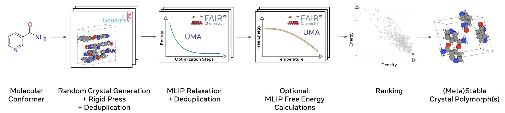
-
FastCSP: Accelerated Molecular Crystal Structure Prediction with Universal Model for Atoms
Vahe Gharakhanyan, Yi Yang, Luis Barroso-Luque, Muhammed Shuaibi, Daniel S. Levine, Kyle Michel, Viachaslau Bernat, Misko Dzamba, Xiang Fu, Meng Gao, Xingyu Liu, Keian Noori, Lafe J. Purvis, Tingling Rao, Brandon M. Wood, Ammar Rizvi, Matt Uyttendaele, Andrew J. Ouderkirk, Chiara Daraio, C. Lawrence Zitnick, Arman Boromand, Noa Marom, Zachary W. Ulissi, Anuroop Sriram
ABSTRACT
Crystal Structure Prediction (CSP) of molecular crystals plays a central role in applications, such as pharmaceuticals and organic electronics. CSP is challenging and computationally expensive due to the need to explore a large search space with sufficient accuracy to capture energy differences of a few kJ/mol between polymorphs. Dispersion-inclusive density functional theory (DFT) provides the required accuracy but its computational cost is impractical for a large number of putative structures. We introduce FastCSP, an open-source, high-throughput CSP workflow based on machine learning interatomic potentials (MLIPs). FastCSP combines random structure generation using Genarris 3.0 with geometry relaxation and free energy calculations powered entirely by the Universal Model for Atoms (UMA) MLIP. We benchmark FastCSP on a curated set of 28 mostly rigid molecules, demonstrating that our workflow consistently generates known experimental structures and ranks them within 5 kJ/mol per molecule of the global minimum. Our results demonstrate that universal MLIPs can be used across diverse compounds without requiring system-specific tuning. Moreover, the speed and accuracy afforded by UMA eliminate the need for classical force fields in the early stages of CSP and for final re-ranking with DFT. The open-source release of the entire FastCSP workflow significantly lowers the barrier to accessing CSP. CSP results for a single system can be obtained within hours on tens of modern GPUs, making high-throughput crystal structure prediction feasible for a broad range of scientific applications.
- 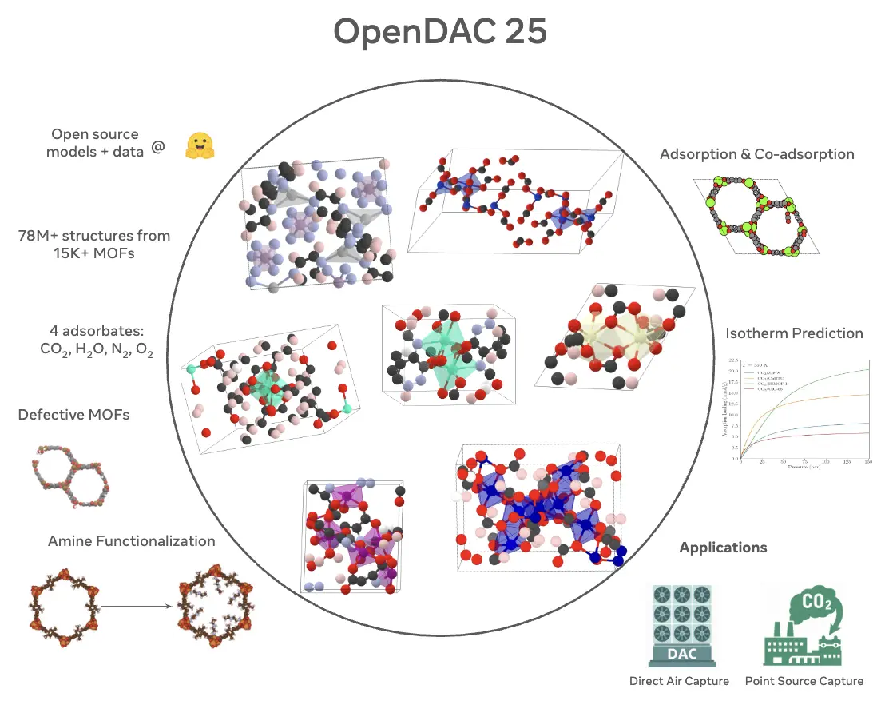
-
The Open DAC 2025 Dataset for Sorbent Discovery in Direct Air Capture
Anuroop Sriram, Logan M. Brabson, Xiaohan Yu, Sihoon Choi, Kareem Abdelmaqsoud, Elias Moubarak, Pim de Haan, Sindy Löwe, Johann Brehmer, John R. Kitchin, Max Welling, C. Lawrence Zitnick, Zachary Ulissi, Andrew J. Medford, David S. Sholl
ABSTRACT
Identifying useful sorbent materials for direct air capture (DAC) from humid air remains a challenge. We present the Open DAC 2025 (ODAC25) dataset, a significant expansion and improvement upon ODAC23 (Sriram et al., ACS Central Science, 10 (2024) 923), comprising nearly 70 million DFT single-point calculations for CO2, H2O, N2, and O2 adsorption in 15,000 MOFs. ODAC25 introduces chemical and configurational diversity through functionalized MOFs, high-energy GCMC-derived placements, and synthetically generated frameworks. ODAC25 also significantly improves upon the accuracy of DFT calculations and the treatment of flexible MOFs in ODAC23. Along with the dataset, we release new state-of-the-art machine-learned interatomic potentials trained on ODAC25 and evaluate them on adsorption energy and Henry's law coefficient predictions.
- 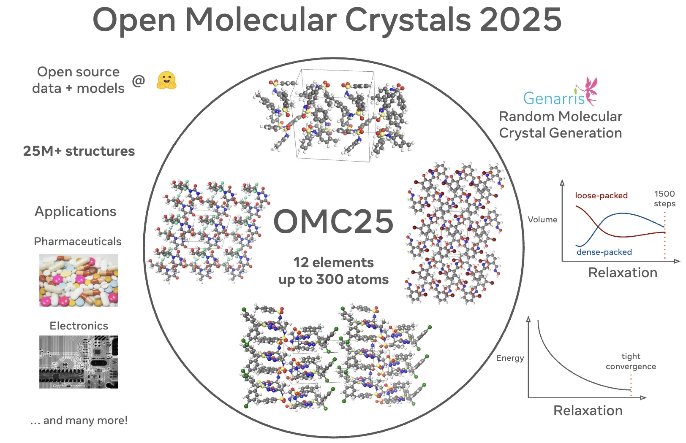
-
Open Molecular Crystals 2025 (OMC25) Dataset and Models
Vahe Gharakhanyan, Luis Barroso-Luque, Yi Yang, Muhammed Shuaibi, Kyle Michel, Daniel S. Levine, Misko Dzamba, Xiang Fu, Meng Gao, Xingyu Liu, Haoran Ni, Keian Noori, Brandon M. Wood, Matt Uyttendaele, Arman Boromand, C. Lawrence Zitnick, Noa Marom, Zachary W. Ulissi, Anuroop Sriram
ABSTRACT
The development of accurate and efficient machine learning models for predicting the structure and properties of molecular crystals has been hindered by the scarcity of publicly available datasets of structures with property labels. To address this challenge, we introduce the Open Molecular Crystals 2025 (OMC25) dataset, a collection of over 27 million molecular crystal structures containing 12 elements and up to 300 atoms in the unit cell. The dataset was generated from dispersion-inclusive density functional theory (DFT) relaxation trajectories of over 230,000 randomly generated molecular crystal structures of around 50,000 organic molecules. OMC25 comprises diverse chemical compounds capable of forming different intermolecular interactions and a wide range of crystal packing motifs. We provide detailed information on the dataset's construction, composition, structure, and properties. To demonstrate the quality and use cases of OMC25, we further trained and evaluated state-of-the-art open-source machine learning interatomic potentials. By making this dataset publicly available, we aim to accelerate the development of more accurate and efficient machine learning models for molecular crystals.
- 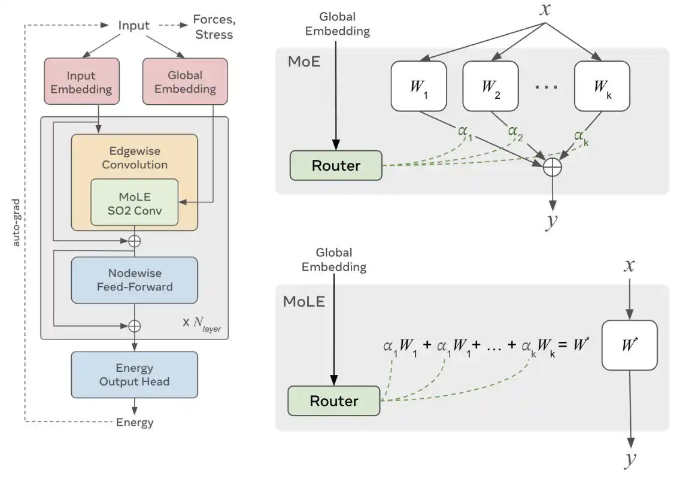
-
UMA: A Family of Universal Models for Atoms
Brandon M. Wood, Misko Dzamba, Xiang Fu, Meng Gao, Muhammed Shuaibi, Luis Barroso-Luque, Kareem Abdelmaqsoud, Vahe Gharakhanyan, John R. Kitchin, Daniel S. Levine, Kyle Michel, Anuroop Sriram, Taco Cohen, Abhishek Das, Ammar Rizvi, Sushree Jagriti Sahoo, Zachary W. Ulissi, C. Lawrence Zitnick
ABSTRACT
The ability to quickly and accurately compute properties from atomic simulations is critical for advancing a large number of applications in chemistry and materials science including drug discovery, energy storage, and semiconductor manufacturing. To address this need, Meta FAIR presents a family of Universal Models for Atoms (UMA), designed to push the frontier of speed, accuracy, and generalization. UMA models are trained on half a billion unique 3D atomic structures (the largest training runs to date) by compiling data across multiple chemical domains, e.g. molecules, materials, and catalysts. We develop empirical scaling laws to help understand how to increase model capacity alongside dataset size to achieve the best accuracy. The UMA small and medium models utilize a novel architectural design we refer to as mixture of linear experts that enables increasing model capacity without sacrificing speed. For example, UMA-medium has 1.4B parameters but only ~50M active parameters per atomic structure. We evaluate UMA models on a diverse set of applications across multiple domains and find that, remarkably, a single model without any fine-tuning can perform similarly or better than specialized models. We are releasing the UMA code, weights, and associated data to accelerate computational workflows and enable the community to continue to build increasingly capable AI models.
- 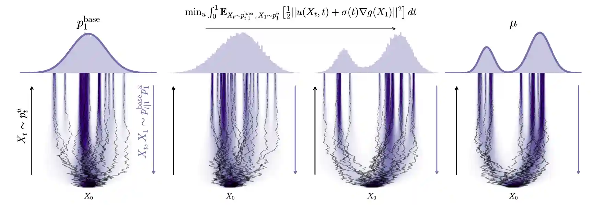
-
Adjoint Sampling: Highly Scalable Diffusion Samplers via Adjoint Matching
Aaron Havens, Benjamin Kurt Miller, Bing Yan, Carles Domingo-Enrich, Anuroop Sriram, Brandon Wood, Daniel Levine, Bin Hu, Brandon Amos, Brian Karrer, Xiang Fu, Guan-Horng Liu, Ricky T. Q. Chen
ABSTRACT
We introduce Adjoint Sampling, a highly scalable and efficient algorithm for learning diffusion processes that sample from unnormalized densities, or energy functions. It is the first on-policy approach that allows significantly more gradient updates than the number of energy evaluations and model samples, allowing us to scale to much larger problem settings than previously explored by similar methods. Our framework is theoretically grounded in stochastic optimal control and shares the same theoretical guarantees as Adjoint Matching, being able to train without the need for corrective measures that push samples towards the target distribution. We show how to incorporate key symmetries, as well as periodic boundary conditions, for modeling molecules in both cartesian and torsional coordinates. We demonstrate the effectiveness of our approach through extensive experiments on classical energy functions, and further scale up to neural network-based energy models where we perform amortized conformer generation across many molecular systems. To encourage further research in developing highly scalable sampling methods, we plan to open source these challenging benchmarks, where successful methods can directly impact progress in computational chemistry.
- 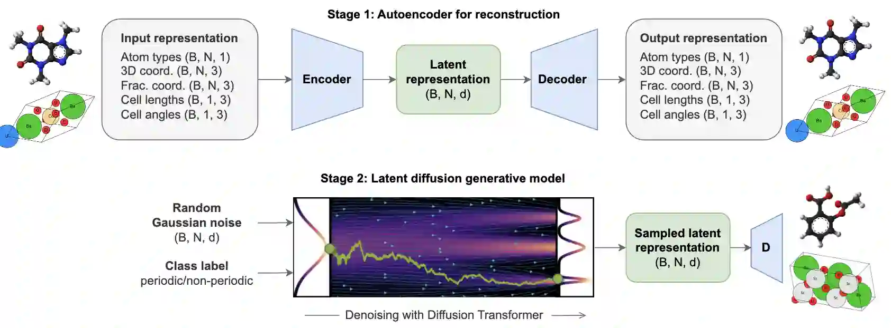
-
All-atom Diffusion Transformers: Unified generative modelling of molecules and materials
Chaitanya K. Joshi, Xiang Fu, Yi-Lun Liao, Vahe Gharakhanyan, Benjamin Kurt Miller, Anuroop Sriram, Zachary W. Ulissi
ABSTRACT
Diffusion models are the standard toolkit for generative modelling of 3D atomic systems. However, for different types of atomic systems - such as molecules and materials - the generative processes are usually highly specific to the target system despite the underlying physics being the same. We introduce the All-atom Diffusion Transformer (ADiT), a unified latent diffusion framework for jointly generating both periodic materials and non-periodic molecular systems using the same model: (1) An autoencoder maps a unified, all-atom representations of molecules and materials to a shared latent embedding space; and (2) A diffusion model is trained to generate new latent embeddings that the autoencoder can decode to sample new molecules or materials. Experiments on QM9 and MP20 datasets demonstrate that jointly trained ADiT generates realistic and valid molecules as well as materials, exceeding state-of-the-art results from molecule and crystal-specific models. ADiT uses standard Transformers for both the autoencoder and diffusion model, resulting in significant speedups during training and inference compared to equivariant diffusion models. Scaling ADiT up to half a billion parameters predictably improves performance, representing a step towards broadly generalizable foundation models for generative chemistry.
-
Flow Matching with General Discrete Paths: A Kinetic-Optimal Perspective
Neta Shaul, Itai Gat, Marton Havasi, Daniel Severo, Anuroop Sriram, Peter Holderrieth, Brian Karrer, Yaron Lipman, Ricky T. Q. Chen
International Conference on Learning Representations (ICLR) 2025
ABSTRACT
The design space of discrete-space diffusion or flow generative models are significantly less well-understood than their continuous-space counterparts, with many works focusing only on a simple masked construction. In this work, we aim to take a holistic approach to the construction of discrete generative models based on continuous-time Markov chains, and for the first time, allow the use of arbitrary discrete probability paths, or colloquially, corruption processes. Through the lens of optimizing the symmetric kinetic energy, we propose velocity formulas that can be applied to any given probability path, completely decoupling the probability and velocity, and giving the user the freedom to specify any desirable probability path based on expert knowledge specific to the data domain. Furthermore, we find that a special construction of mixture probability paths optimizes the symmetric kinetic energy for the discrete case. We empirically validate the usefulness of this new design space across multiple modalities: text generation, inorganic material generation, and image generation. We find that we can outperform the mask construction even in text with kinetic-optimal mixture paths, while we can make use of domain-specific constructions of the probability path over the visual domain.
2024
- 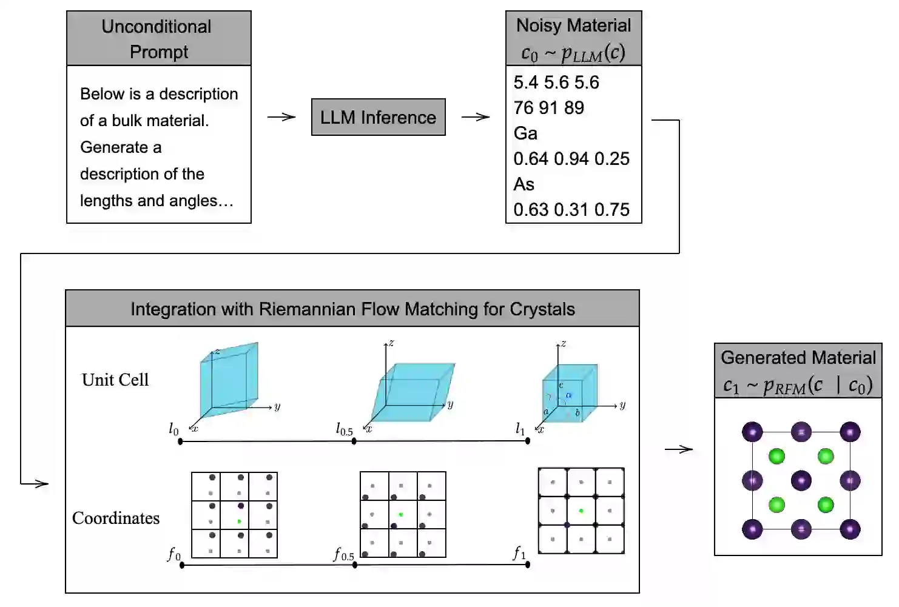
-
FlowLLM: Flow Matching for Material Generation with Large Language Models as Base Distributions
Anuroop Sriram, Benjamin Kurt Miller, Ricky T. Q. Chen, Brandon M Wood
NeurIPS 2024
ABSTRACT
Material discovery is a critical area of research with the potential to revolutionize various fields, including carbon capture, renewable energy, and electronics. However, the immense scale of the chemical space makes it challenging to explore all possible materials experimentally. In this paper, we introduce FlowLLM, a novel generative model that combines large language models (LLMs) and Riemannian flow matching (RFM) to design novel crystalline materials. FlowLLM first fine-tunes an LLM to learn an effective base distribution of meta-stable crystals in a text representation. After converting to a graph representation, the RFM model takes samples from the LLM and iteratively refines the coordinates and lattice parameters. Our approach significantly outperforms state-of-the-art methods, increasing the generation rate of stable materials by over three times and increasing the rate for stable, unique, and novel crystals by ∼50% - a huge improvement on a difficult problem. Additionally, the crystals generated by FlowLLM are much closer to their relaxed state when compared with another leading model, significantly reducing post-hoc computational cost.
- 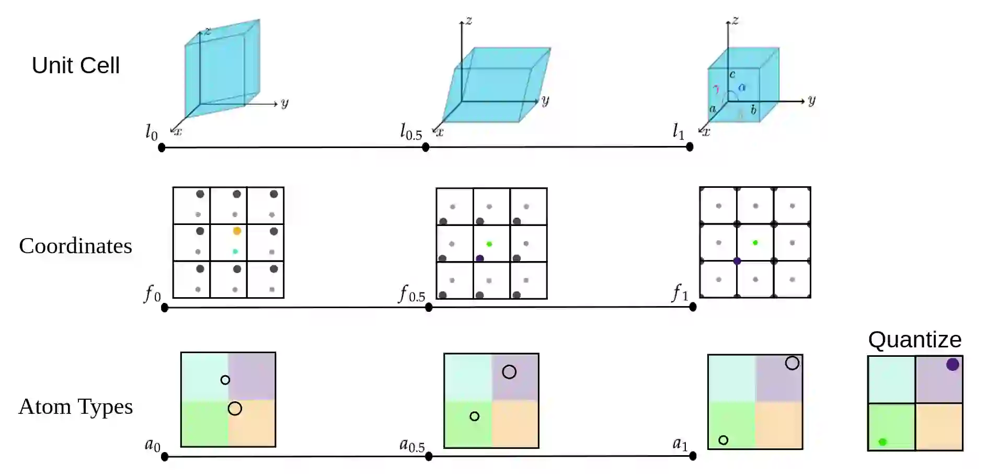
-
FlowMM: Generating Materials with Riemannian Flow Matching
Benjamin Kurt Miller, Ricky T. Q. Chen, Anuroop Sriram, Brandon M Wood
International Conference on Machine Learning (ICML) 2024
ABSTRACT
Crystalline materials are a fundamental component in next-generation technologies, yet modeling their distribution presents unique computational challenges. Of the plausible arrangements of atoms in a periodic lattice only a vanishingly small percentage are thermodynamically stable, which is a key indicator of the materials that can be experimentally realized. Two fundamental tasks in this area are to (a) predict the stable crystal structure of a known composition of elements and (b) propose novel compositions along with their stable structures. We present FlowMM, a pair of generative models that achieve state-of-the-art performance on both tasks while being more efficient and more flexible than competing methods. We extend Riemannian Flow Matching to suit the symmetries inherent to crystals: translation, rotation, permutation, and periodic boundary conditions. Our framework enables the freedom to choose the flow base distributions, drastically simplifying the problem of learning crystal structures compared with diffusion models. In addition to standard benchmarks, we validate FlowMM's generated structures with quantum chemistry calculations, demonstrating that it is 3x more efficient, in terms of integration steps, at finding stable materials compared to previous open methods.
- 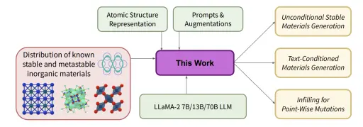
-
Fine-Tuned Language Models Generate Stable Inorganic Materials as Text
Nate Gruver, Anuroop Sriram, Andrea Madotto, Andrew Wilson, C Lawrence Zitnick, Zachary Ulissi
International Conference on Learning Representations (ICLR) 2024
ABSTRACT
Deep learning models have drastically accelerated materials discovery by accelerating predictive computational simulations like density functional theory (DFT). Large open computational materials databases such as the Materials Project or OQMD contain O(10<sup>6</sup>) known structures, and it is now straightforward to search those databases for materials with exciting properties. However, these databases are limited to experimentally known materials or candidates discovered in high-throughput computational campaigns. Many state-of-the-art engineering advances in solar photovaltaics, battery electrodes, and catalysts are made by discovering materials with outstanding properties that have not yet been discovered. Generative models are a natural solution to expand families of interest through sampling. While popular methods are typically constructed from variational autoencoders or diffusion models, we propose fine-tuning large language models for generation of stable materials. While unorthodox, fine-tuning large language models on text-encoded atomistic data is simple to implement yet reliable, with around 90% of sampled structures obeying physical constraints on atom positions and charges. Using energy of hull calculations from both learned ML potentials and gold-standard DFT calculations, we show that our strongest model (fine-tuned LLaMA-2 70B) can generate materials predicted to be metastable at about twice the rate (49% vs 28%) of CDVAE, a competing diffusion model. Because of text prompting's inherent flexibility, our models can simultaneously be used for unconditional generation of stable material, infilling of partial structures and text-conditional generation. Finally, we show that language models' ability to capture key symmetries of crystal structures improves with model scale, suggesting that the biases of pretrained LLMs are surprisingly well-suited for atomistic data.
- 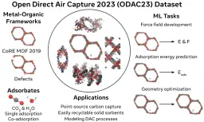
-
The Open DAC 2023 Dataset and Challenges for Sorbent Discovery in Direct Air Capture
Anuroop Sriram, Sihoon Choi, Xiaohan Yu, Logan M. Brabson, Abhishek Das, Zachary Ulissi, Matt Uyttendaele, Andrew J. Medford, David S. Sholl
ACS: Central Science
ABSTRACT MEDIA
New methods for carbon dioxide removal are urgently needed to combat global climate change. Direct air capture (DAC) is an emerging technology to capture carbon dioxide directly from ambient air. Metal-organic frameworks (MOFs) have been widely studied as potentially customizable adsorbents for DAC. However, discovering promising MOF sorbents for DAC is challenging because of the vast chemical space to explore and the need to understand materials as functions of humidity and temperature. We explore a computational approach benefiting from recent innovations in machine learning (ML) and present a dataset named Open DAC 2023 (ODAC23) consisting of more than 38M density functional theory (DFT) calculations on more than 8,800 MOF materials containing adsorbed CO<sub>2</sub> and/or H<sub>2</sub>O. ODAC23 is by far the largest dataset of MOF adsorption calculations at the DFT level of accuracy currently available. In addition to probing properties of adsorbed molecules, the dataset is a rich source of information on structural relaxation of MOFs, which will be useful in many contexts beyond specific applications for DAC. A large number of MOFs with promising properties for DAC are identified directly in ODAC23. We also trained state-of-the-art ML models on this dataset to approximate calculations at the DFT level. This open-source dataset and our initial ML models will provide an important baseline for future efforts to identify MOFs for a wide range of applications, including DAC.
- "This Week in AI: Generative AI and the problem of compensating creators" by Kyle Wiggers Devin Coldewey
- "Researchers create massive open dataset to advance AI solutions for carbon capture" by Catherine Barzler
- "Meta And Georgia Tech Release Open Direct Air Capture Dataset To Accelerate Research" by Petya Trendafilova
- "Meta & Georgia Tech Researchers Release a New Dataset and Associated AI Models to Help Accelerate Research on Direct Air Capture to Combat Climate Change" by Rachit Ranjan
- 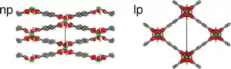
-
Integrating crystallographic and computational approaches to carbon-capture materials for the mitigation of climate change
Eric Cockayne, Austin McDannald, Winnie Wong-Ng, Yu-Sheng Chen, Felipe Gándara, Jason Benedict, Christopher H Hendon, David A Keen, Ute Kolb, Lan Li, Shengqian Ma, William Morris, Aditya Nandy, Tomče Runčevski, Mustapha Soukri, Anuroop Sriram, Janice A Steckel, John Findley, Christopher Eli Wilmer, Taner Yildirim, Wei Zhou, Igor Levin, Craig M Brown
Journal of Materials Chemistry A
ABSTRACT
This article presents an overview of the current state of the art in the structure determination of microporous carbon-capture materials, as discussed at the recent NIST workshop "Integrating Crystallographic and Computational Approaches to Carbon-Capture Materials for the Mitigation of Climate Change". The continual rise in anthropogenic CO2 concentration and its effect on climate change call for the implementation of carbon capture technologies to reduce the CO2 concentration in the atmosphere. Porous solids, including metal–organic frameworks (MOFs), are feasible candidates for gas capture and storage applications. However, determining the structure of these materials represents a significant obstacle in their development into advanced sorbents. The existing difficulties can be overcome by integrating crystallographic methods and theoretical modeling. The workshop gathered experimentalists and theorists from academia, government, and industry to review this field and identify approaches, including collaborative opportunities, required to develop tools for rapid determination of the structures of porous solid sorbents and the effect of structure on the carbon capture performance. We highlight the findings of that workshop, especially in the need for reference materials, standardized procedures and reporting of sorbent activation and adsorption measurements, standardized reporting of theoretical calculations, and round-robin structure determination.
- 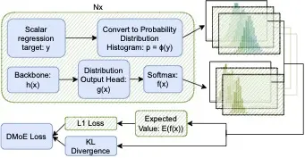
-
Distribution Learning for Molecular Regression
Nima Shoghi, Pooya Shoghi, Anuroop Sriram, Abhishek Das
ABSTRACT
Using "soft" targets to improve model performance has been shown to be effective in classification settings, but the usage of soft targets for regression is a much less studied topic in machine learning. The existing literature on the usage of soft targets for regression fails to properly assess the method's limitations, and empirical evaluation is quite limited. In this work, we assess the strengths and drawbacks of existing methods when applied to molecular property regression tasks. Our assessment outlines key biases present in existing methods and proposes methods to address them, evaluated through careful ablation studies. We leverage these insights to propose Distributional Mixture of Experts (DMoE): A model-independent, and data-independent method for regression which trains a model to predict probability distributions of its targets. Our proposed loss function combines the cross entropy between predicted and target distributions and the L1 distance between their expected values to produce a loss function that is robust to the outlined biases. We evaluate the performance of DMoE on different molecular property prediction datasets -- Open Catalyst (OC20), MD17, and QM9 -- across different backbone model architectures -- SchNet, GemNet, and Graphormer. Our results demonstrate that the proposed method is a promising alternative to classical regression for molecular property prediction tasks, showing improvements over baselines on all datasets and architectures.
2023
- 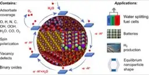
-
The Open Catalyst 2022 (OC22) Dataset and Challenges for Oxide Electrocatalysis
Richard Tran, Janice Lan, Muhammed Shuaibi, Siddharth Goyal, Brandon M Wood, Abhishek Das, Javier Heras-Domingo, Adeesh Kolluru, Ammar Rizvi, Nima Shoghi et al.
ACS Catalysis
ABSTRACT MEDIA
Computational catalysis and machine learning communities have made considerable progress in developing machine learning models for catalyst discovery and design. Yet, a general machine learning potential that spans the chemical space of catalysis is still out of reach. A significant hurdle is obtaining access to training data across a wide range of materials. One important class of materials where data is lacking are oxides, which inhibits models from studying the Oxygen Evolution Reaction and oxide electrocatalysis more generally. To address this we developed the Open Catalyst 2022(OC22) dataset, consisting of 62,521 Density Functional Theory (DFT) relaxations (~9,884,504 single point calculations) across a range of oxide materials, coverages, and adsorbates (*H, *O, *N, *C, *OOH, *OH, *OH2, *O2, *CO). We define generalized tasks to predict the total system energy that are applicable across catalysis, develop baseline performance of several graph neural networks (SchNet, DimeNet++, ForceNet, SpinConv, PaiNN, GemNet-dT, GemNet-OC), and provide pre-defined dataset splits to establish clear benchmarks for future efforts. For all tasks, we study whether combining datasets leads to better results, even if they contain different materials or adsorbates. Specifically, we jointly train models on Open Catalyst 2020 (OC20) Dataset and OC22, or fine-tune pretrained OC20 models on OC22. In the most general task, GemNet-OC sees a ~32% improvement in energy predictions through fine-tuning and a ~9% improvement in force predictions via joint training. Surprisingly, joint training on both the OC20 and much smaller OC22 datasets also improves total energy predictions on OC20 by ~19%. The dataset and baseline models are open sourced, and a public leaderboard will follow to encourage continued community developments on the total energy tasks and data.
- 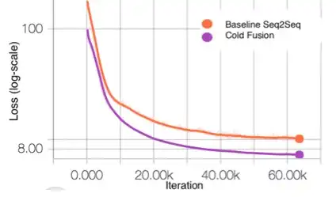
-
Cold fusing sequence-to-sequence models with language models (Patent)
Anuroop Sriram, Heewoo Jun, Sanjeev Satheesh, Adam Coates
US Patent 11,620,986
ABSTRACT
Described herein are systems and methods for generating natural language sentences with Sequence-to-sequence (Seq2Seq) models with attention. The Seq2Seq models may be implemented in applications, such as machine translation, image captioning, and speech recognition. Performance has further been improved by leveraging unlabeled data, often in the form of a language models. Disclosed herein are “Cold Fusion” architecture embodiments that leverage a pre-trained language model during training. The Seq2Seq models with Cold Fusion embodiments are able to better utilize language information enjoying faster convergence, better generalization, and almost complete transfer to a new domain while using less labeled training data.
- 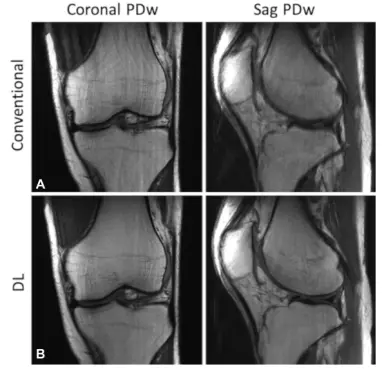
-
Deep Learning Reconstruction Enables Prospectively Accelerated Clinical Knee MRI
Patricia M. Johnson, Dana J. Lin, Jure Zbontar, C. Lawrence Zitnick, Anuroop Sriram, Matthew Muckley, James S. Babb, Mitchell Kline, Gina Ciavarra, Erin Alaia, Mohammad Samim, William R. Walter, Liz Calderon, Thomas Pock, Daniel K. Sodickson, Michael P. Recht, and Florian Knoll
Radiology
ABSTRACT MEDIA
Compared with conventional reconstruction, deep learning reconstruction of prospectively accelerated knee MRI enabled an almost two fold scan time reduction, improved image quality, and had equivalent diagnostic utility.<br/><br/> <b>Background</b><br/>MRI is a powerful diagnostic tool with a long acquisition time. Recently, deep learning (DL) methods have provided accelerated high-quality image reconstructions from undersampled data, but it is unclear if DL image reconstruction can be reliably translated to everyday clinical practice.<br/><br/> <b>Purpose</b><br/>To determine the diagnostic equivalence of prospectively accelerated DL-reconstructed knee MRI compared with conventional accelerated MRI for evaluating internal derangement of the knee in a clinical setting.<br/><br/> <b>Materials and Methods</b><br/>A DL reconstruction model was trained with images from 298 clinical 3-T knee examinations. In a prospective analysis, patients clinically referred for knee MRI underwent a conventional accelerated knee MRI protocol at 3 T followed by an accelerated DL protocol between January 2020 and February 2021. The equivalence of the DL reconstruction of the images relative to the conventional images for the detection of an abnormality was assessed in terms of interchangeability. Each examination was reviewed by six musculoskeletal radiologists. Analyses pertaining to the detection of meniscal or ligament tears and bone marrow or cartilage abnormalities were based on four-point ordinal scores for the likelihood of an abnormality. Additionally, the protocols were compared with use of four-point ordinal scores for each aspect of image quality: overall image quality, presence of artifacts, sharpness, and signal-to-noise ratio.<br/><br/> <b>Results</b><br/>A total of 170 participants (mean age ± SD, 45 years ± 16; 76 men) were evaluated. The DL-reconstructed images were determined to be of diagnostic equivalence with the conventional images for detection of abnormalities. The overall image quality score, averaged over six readers, was significantly better (P < .001) for the DL than for the conventional images.<br/><br/> <b>Conclusion</b><br/>In a clinical setting, deep learning reconstruction enabled a nearly twofold reduction in scan time for a knee MRI and was diagnostically equivalent with the conventional protocol.
- "Breakthrough MRI technology uses AI for faster scans"
- "Editorial: The Role of Speed and Possible Implications" by Frank Roemer
- "Artificial Intelligence Reconstructs Missing Data from Rapid MRI Scans"
- "Health Rounds: AI speeds MRI exams"
- "Deep learning reconstruction enables accelerated knee MRI" by Elana Gotkine
2022
- 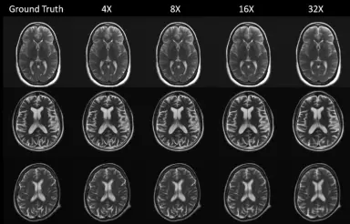
-
Exploring the Acceleration Limits of Deep Learning VarNet-based Two-dimensional Brain MRI
Alireza Radmanesh, Matthew J. Muckley , Tullie Murrell, Emma Lindsey, Anuroop Sriram, Florian Knoll, Daniel K. Sodickson, Yvonne W. Lui
Radiology: Artificial Intelligence
ABSTRACT
<b>Purpose:</b><br/>To explore the limits of deep learning-based brain MRI reconstruction and identify useful acceleration ranges for general-purpose imaging and potential screening.<br/><br/> <b>Materials and Methods:</b><br/>In this retrospective study conducted from 2019 through 2021, a model was trained for reconstruction on 5,847 brain MRIs. Performance was evaluated across a wide range of accelerations (up to 100-fold along a single phase-encoded direction for two-dimensional [2D] slices) on the fastMRI test set collected by New York University, consisting of 558 image volumes. In a sample of 69 volumes, reconstructions were classified by radiologists for identifying two clinical thresholds: 1) general-purpose diagnostic imaging and 2) potential use in a screening protocol. A Monte Carlo procedure was developed for estimating reconstruction error with only undersampled data. The model was evaluated on both in-domain and out-of-domain data. Confidence intervals were calculated using the percentile bootstrap method.<br/><br/> <b>Results:</b><br/>Radiologists rated 100% of 69 volumes as having sufficient image quality for general-purpose imaging at up to 4× acceleration and 65 of 69 (94%) of volumes as having sufficient image quality for screening at up to 14× acceleration. The Monte Carlo procedure estimated ground truth peak signal-to-noise ratio and mean squared error with coefficients of determination greater than 0.5 at all accelerations. Out-of-distribution experiments demonstrated the model’s ability to produce images substantially distinct from the training set, even at 100× acceleration.<br/><br/> <b>Conclusion:</b><br/>For 2D brain images using deep learning-based reconstruction, maximum acceleration for potential screening was 3–4 times higher than that for diagnostic general-purpose imaging.
- 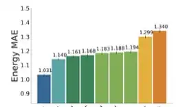
-
The Open Catalyst Challenge 2021: Competition Report
Abhishek Das, Muhammed Shuaibi, Aini Palizhati, Siddharth Goyal, Aditya Grover, Adeesh Kolluru, Janice Lan, Ammar Rizvi, Anuroop Sriram, Brandon Wood et al.
NeurIPS 2021 Competitions and Demonstrations Track
ABSTRACT
In this report, we describe the Open Catalyst Challenge held at NeurIPS 2021, focusing on using machine learning (ML) to accelerate the search for low-cost catalysts that can drive reactions converting renewable energy to storable forms. Specifically, the challenge required participants to develop ML approaches for relaxed energy prediction, i.e. given atomic positions for an adsorbate-catalyst system, the goal was to predict the energy of the system’s relaxed or lowest energy state. To perform well on this task, ML approaches need to approximate the quantum mechanical computations in Density Functional Theory (DFT). By modeling these accurately, the catalyst’s impact on the overall rate of a chemical reaction may be estimated; a key factor in filtering potential electrocatalyst materials. The challenge encouraged community-wide progress on this task and the winning approach improved direct relaxed energy prediction by 15% relative over the previous state-of-the-art.
- 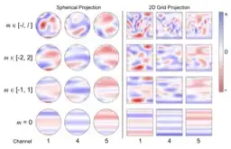
-
Spherical Channels for Modeling Atomic Interactions
C Lawrence Zitnick, Abhishek Das, Adeesh Kolluru, Janice Lan, Muhammed Shuaibi, Anuroop Sriram, Zachary Ulissi, Brandon Wood
NeurIPS 2022
ABSTRACT
Modeling the energy and forces of atomic systems is a fundamental problem in computational chemistry with the potential to help address many of the world's most pressing problems, including those related to energy scarcity and climate change. These calculations are traditionally performed using Density Functional Theory, which is computationally very expensive. Machine learning has the potential to dramatically improve the efficiency of these calculations from days or hours to seconds. We propose the Spherical Channel Network (SCN) to model atomic energies and forces. The SCN is a graph neural network where nodes represent atoms and edges their neighboring atoms. The atom embeddings are a set of spherical functions, called spherical channels, represented using spherical harmonics. We demonstrate, that by rotating the embeddings based on the 3D edge orientation, more information may be utilized while maintaining the rotational equivariance of the messages. While equivariance is a desirable property, we find that by relaxing this constraint in both message passing and aggregation, improved accuracy may be achieved. We demonstrate state-of-the-art results on the large-scale Open Catalyst 2020 dataset in both energy and force prediction for numerous tasks and metrics.
- 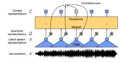
-
Wav2Vec-Aug: Improved self-supervised training with limited data
Anuroop Sriram, Michael Auli, Alexei Baevski
Interspeech 2022
ABSTRACT
Self-supervised learning (SSL) of speech representations has received much attention over the last few years but most work has focused on languages and domains with an abundance of unlabeled data. However, for many languages there is a shortage even in the unlabeled data which limits the effectiveness of SSL. In this work, we focus on the problem of applying SSL to domains with limited available data by leveraging data augmentation for Wav2Vec 2.0 pretraining. Further, we propose improvements to each component of the model which result in a combined relative word error rate (WER) improvement of up to 13% compared to Wav2Vec 2.0 on Librispeech test-clean / other.
- 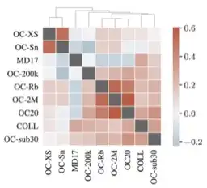
-
GemNet-OC: Developing Graph Neural Networks for Large and Diverse Molecular Simulation Datasets
Johannes Gasteiger, Muhammed Shuaibi, Anuroop Sriram, Stephan Gunnemann, Zachary Ulissi, C Lawrence Zitnick, Abhishek Das
Transactions on Machine Learning Research (TMLR) 2022
ABSTRACT
Recent years have seen the advent of molecular simulation datasets that are orders of magnitude larger and more diverse. These new datasets differ substantially in four aspects of complexity: 1. Chemical diversity (number of different elements), 2. system size (number of atoms per sample), 3. dataset size (number of data samples), and 4. domain shift (similarity of the training and test set). Despite these large differences, benchmarks on small and narrow datasets remain the predominant method of demonstrating progress in graph neural networks (GNNs) for molecular simulation, likely due to cheaper training compute requirements. This raises the question -- <em>does GNN progress on small and narrow datasets translate to these more complex datasets?</em> This work investigates this question by first developing the GemNet-OC model based on the large Open Catalyst 2020 (OC20) dataset. GemNet-OC outperforms the previous state-of-the-art on OC20 by 16% while reducing training time by a factor of 10. We then compare the impact of 18 model components and hyperparameter choices on performance in multiple datasets. We find that the resulting model would be drastically different depending on the dataset used for making model choices. To isolate the source of this discrepancy we study six subsets of the OC20 dataset that individually test each of the above-mentioned four dataset aspects. We find that results on the OC-2M subset correlate well with the full OC20 dataset while being substantially cheaper to train on. Our findings challenge the common practice of developing GNNs solely on small datasets, but highlight ways of achieving fast development cycles and generalizable results via moderately-sized, representative datasets such as OC-2M and efficient models such as GemNet-OC. Our code and pretrained model weights are open-sourced.
- 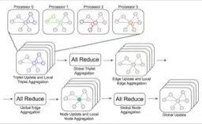
-
Towards Training Billion Parameter Graph Neural Networks for Atomic Simulations
Anuroop Sriram, Abhishek Das, Brandon M Wood, Siddharth Goyal, C Lawrence Zitnick
International Conference on Learning Representations (ICLR) 2022
ABSTRACT
Recent progress in Graph Neural Networks (GNNs) for modeling atomic simulations has the potential to revolutionize catalyst discovery, which is a key step in making progress towards the energy breakthroughs needed to combat climate change. However, the GNNs that have proven most effective for this task are memory intensive as they model higher-order interactions in the graphs such as those between triplets or quadruplets of atoms, making it challenging to scale these models. In this paper, we introduce <em>Graph Parallelism</em>, a method to distribute input graphs across multiple GPUs, enabling us to train very large GNNs with hundreds of millions or billions of parameters. We empirically evaluate our method by scaling up the number of parameters of the recently proposed DimeNet++ and GemNet models by over an order of magnitude. On the large-scale Open Catalyst 2020 (OC20) dataset, these graph-parallelized models lead to relative improvements of 1) 15% on the force MAE metric for the S2EF task and 2) 21% on the AFbT metric for the IS2RS task, establishing new state-of-the-art results</em>.
2021
- 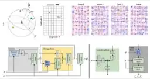
-
Rotation invariant graph neural networks using spin convolutions
Muhammed Shuaibi, Adeesh Kolluru, Abhishek Das, Aditya Grover, Anuroop Sriram, Zachary Ulissi, C Lawrence Zitnick
ABSTRACT
Progress towards the energy breakthroughs needed to combat climate change can be significantly accelerated through the efficient simulation of atomic systems. Simulation techniques based on first principles, such as Density Functional Theory (DFT), are limited in their practical use due to their high computational expense. Machine learning approaches have the potential to approximate DFT in a computationally efficient manner, which could dramatically increase the impact of computational simulations on real-world problems. Approximating DFT poses several challenges. These include accurately modeling the subtle changes in the relative positions and angles between atoms, and enforcing constraints such as rotation invariance or energy conservation. We introduce a novel approach to modeling angular information between sets of neighboring atoms in a graph neural network. Rotation invariance is achieved for the network's edge messages through the use of a per-edge local coordinate frame and a novel spin convolution over the remaining degree of freedom. Two model variants are proposed for the applications of structure relaxation and molecular dynamics. State-of-the-art results are demonstrated on the large-scale Open Catalyst 2020 dataset. Comparisons are also performed on the MD17 and QM9 datasets.
- 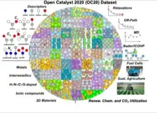
-
Open catalyst 2020 (OC20) dataset and community challenges
Lowik Chanussot, Abhishek Das, Siddharth Goyal, Thibaut Lavril, Muhammed Shuaibi, Morgane Riviere, Kevin Tran, Javier Heras-Domingo, Caleb Ho, Weihua Hu et al.
ACS Catalysis
ABSTRACT MEDIA
Catalyst discovery and optimization is key to solving many societal and energy challenges including solar fuels synthesis, long-term energy storage, and renewable fertilizer production. Despite considerable effort by the catalysis community to apply machine learning models to the computational catalyst discovery process, it remains an open challenge to build models that can generalize across both elemental compositions of surfaces and adsorbate identity/configurations, perhaps because datasets have been smaller in catalysis than related fields. To address this we developed the OC20 dataset, consisting of 1,281,040 Density Functional Theory (DFT) relaxations (~264,890,000 single point evaluations) across a wide swath of materials, surfaces, and adsorbates (nitrogen, carbon, and oxygen chemistries). We supplemented this dataset with randomly perturbed structures, short timescale molecular dynamics, and electronic structure analyses. The dataset comprises three central tasks indicative of day-to-day catalyst modeling and comes with pre-defined train/validation/test splits to facilitate direct comparisons with future model development efforts. We applied three state-of-the-art graph neural network models (CGCNN, SchNet, Dimenet++) to each of these tasks as baseline demonstrations for the community to build on. In almost every task, no upper limit on model size was identified, suggesting that even larger models are likely to improve on initial results. The dataset and baseline models are both provided as open resources, as well as a public leader board to encourage community contributions to solve these important tasks.
- "Facebook and Carnegie Mellon launch the Open Catalyst Project to find new ways to store renewable energy" by Larry Zitnick
- "Facebook A.I. researchers push for a breakthrough in renewable energy storage" by Jeremy Kahn
- "Facebook deploys its AI to find green energy storage solutions" by Andrew Tarantola
- "Facebook to use artificial intelligence in bid to improve renewable energy storage" by Sam Shead
- "Facebook and Carnegie Mellon launch project to discover better ways to store renewable energy" by Kyle Wiggers
- "Facebook plans to use AI to help fight climate change" by Queenie Wong
-

-
Results of the 2020 fastmri challenge for machine learning mr image reconstruction
Matthew J Muckley, Bruno Riemenschneider, Alireza Radmanesh, Sunwoo Kim, Geunu Jeong, Jingyu Ko, Yohan Jun, Hyungseob Shin, Dosik Hwang, Mahmoud Mostapha et al.
IEEE Transactions on Medical Imaging (TMI)
ABSTRACT
Accelerating MRI scans is one of the principal outstanding problems in the MRI research community. Towards this goal, we hosted the second fastMRI competition targeted towards reconstructing MR images with subsampled k-space data. We provided participants with data from 7,299 clinical brain scans (de-identified via a HIPAA-compliant procedure by NYU Langone Health), holding back the fully-sampled data from 894 of these scans for challenge evaluation purposes. In contrast to the 2019 challenge, we focused our radiologist evaluations on pathological assessment in brain images. We also debuted a new Transfer track that required participants to submit models evaluated on MRI scanners from outside the training set. We received 19 submissions from eight different groups. Results showed one team scoring best in both SSIM scores and qualitative radiologist evaluations. We also performed analysis on alternative metrics to mitigate the effects of background noise and collected feedback from the participants to inform future challenges. Lastly, we identify common failure modes across the submissions, highlighting areas of need for future research in the MRI reconstruction community.
- 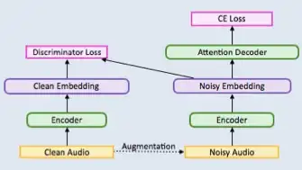
-
Systems and methods for robust speech recognition using generative adversarial networks (Patent)
Anuroop Sriram, Hee Woo Jun, Yashesh Gaur, Sanjeev Satheesh
US Patent 10,971,142
ABSTRACT
Described herein are systems and methods for a general, scalable, end-to-end framework that uses a generative adversarial network (GAN) objective to enable robust speech recognition. Encoders trained with the proposed approach enjoy improved invariance by learning to map noisy audio to the same embedding space as that of clean audio. Embodiments of a Wasserstein GAN framework increase the robustness of seq-to-seq models in a scalable, end-to-end fashion. In one or more embodiments, an encoder component is treated as the generator of GAN and is trained to produce indistinguishable embeddings between labeled and unlabeled audio samples. This new robust training approach can learn to induce robustness without alignment or complicated inference pipeline and even where augmentation of audio data is not possible.
-
Robust Wav2vec 2.0: Analyzing Domain Shift in Self-Supervised Pre-Training
Wei-Ning Hsu, Anuroop Sriram, Alexei Baevski, Tatiana Likhomanenko, Qiantong Xu, Vineel Pratap, Jacob Kahn, Ann Lee, Ronan Collobert, Gabriel Synnaeve, Michael Auli
Interspeech 2021
ABSTRACT
Self-supervised learning of speech representations has been a very active research area but most work is focused on a single domain such as read audio books for which there exist large quantities of labeled and unlabeled data. In this paper, we explore more general setups where the domain of the unlabeled data for pre-training data differs from the domain of the labeled data for fine-tuning, which in turn may differ from the test data domain. Our experiments show that using target domain data during pre-training leads to large performance improvements across a variety of setups. On a large-scale competitive setup, we show that pre-training on unlabeled in-domain data reduces the gap between models trained on in-domain and out-of-domain labeled data by 66%-73%. This has obvious practical implications since it is much easier to obtain unlabeled target domain data than labeled data. Moreover, we find that pre-training on multiple domains improves generalization performance on domains not seen during training. Code and models will be made available at this https URL.
- 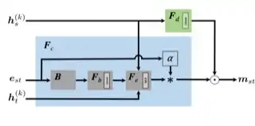
-
Forcenet: A graph neural network for large-scale quantum calculations
Weihua Hu, Muhammed Shuaibi, Abhishek Das, Siddharth Goyal, Anuroop Sriram, Jure Leskovec, Devi Parikh, C Lawrence Zitnick
ABSTRACT
With massive amounts of atomic simulation data available, there is a huge opportunity to develop fast and accurate machine learning models to approximate expensive physics-based calculations. The key quantity to estimate is atomic forces, where the state-of-the-art Graph Neural Networks (GNNs) explicitly enforce basic physical constraints such as rotation-covariance. However, to strictly satisfy the physical constraints, existing models have to make tradeoffs between computational efficiency and model expressiveness. Here we explore an alternative approach. By not imposing explicit physical constraints, we can flexibly design expressive models while maintaining their computational efficiency. Physical constraints are implicitly imposed by training the models using physics-based data augmentation. To evaluate the approach, we carefully design a scalable and expressive GNN model, ForceNet, and apply it to OC20 (Chanussot et al., 2020), an unprecedentedly-large dataset of quantum physics calculations. Our proposed ForceNet is able to predict atomic forces more accurately than state-of-the-art physics-based GNNs while being faster both in training and inference. Overall, our promising and counter-intuitive results open up an exciting avenue for future research.
- 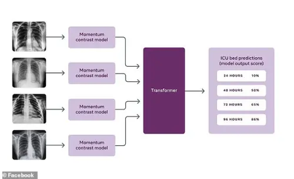
-
Covid-19 prognosis via self-supervised representation learning and multi-image prediction
Anuroop Sriram, Matthew Muckley, Koustuv Sinha, Farah Shamout, Joelle Pineau, Krzysztof J Geras, Lea Azour, Yindalon Aphinyanaphongs, Nafissa Yakubova, William Moore
ABSTRACT MEDIA
The rapid spread of COVID-19 cases in recent months has strained hospital resources, making rapid and accurate triage of patients presenting to emergency departments a necessity. Machine learning techniques using clinical data such as chest X-rays have been used to predict which patients are most at risk of deterioration. We consider the task of predicting two types of patient deterioration based on chest X-rays: adverse event deterioration (i.e., transfer to the intensive care unit, intubation, or mortality) and increased oxygen requirements beyond 6 L per day. Due to the relative scarcity of COVID-19 patient data, existing solutions leverage supervised pretraining on related non-COVID images, but this is limited by the differences between the pretraining data and the target COVID-19 patient data. In this paper, we use self-supervised learning based on the momentum contrast (MoCo) method in the pretraining phase to learn more general image representations to use for downstream tasks. We present three results. The first is deterioration prediction from a single image, where our model achieves an area under receiver operating characteristic curve (AUC) of 0.742 for predicting an adverse event within 96 hours (compared to 0.703 with supervised pretraining) and an AUC of 0.765 for predicting oxygen requirements greater than 6 L a day at 24 hours (compared to 0.749 with supervised pretraining). We then propose a new transformer-based architecture that can process sequences of multiple images for prediction and show that this model can achieve an improved AUC of 0.786 for predicting an adverse event at 96 hours and an AUC of 0.848 for predicting mortalities at 96 hours. A small pilot clinical study suggested that the prediction accuracy of our model is comparable to that of experienced radiologists analyzing the same information.
- "Facebook uses AI to predict if COVID-19 patients will need more care" by Queenie Wong
- "Facebook develops A.I. to predict likelihood of worsening Covid symptoms" by Sam Shead
- "Facebook claims its AI can predict four days in advance if a coronavirus patient's condition will deteriorate - just by looking at a single chest X-ray" by Stacy Liberatore
2020
-
-
State-of-the-art machine learning MRI reconstruction in 2020: Results of the second fastMRI challenge
Matthew Muckley, Bruno Riemenschneider, Alireza Radmanesh, Sunwoo Kim, Geunu Jeong, Jingyu Ko, Yohan Jun, Hyungseob Shin, Dosik Hwang, Mahmoud Mostapha et al.
ABSTRACT
Accelerating MRI scans is one of the principal outstanding problems in the MRI research community. Towards this goal, we hosted the second fastMRI competition targeted towards reconstructing MR images with subsampled k-space data. We provided participants with data from 7,299 clinical brain scans (de-identified via a HIPAA-compliant procedure by NYU Langone Health), holding back the fully-sampled data from 894 of these scans for challenge evaluation purposes. In contrast to the 2019 challenge, we focused our radiologist evaluations on pathological assessment in brain images. We also debuted a new Transfer track that required participants to submit models evaluated on MRI scanners from outside the training set. We received 19 submissions from eight different groups. Results showed one team scoring best in both SSIM scores and qualitative radiologist evaluations. We also performed analysis on alternative metrics to mitigate the effects of background noise and collected feedback from the participants to inform future challenges. Lastly, we identify common failure modes across the submissions, highlighting areas of need for future research in the MRI reconstruction community.
-
Cold fusing sequence-to-sequence models with language models (Patent)
Anuroop Sriram, Heewoo Jun, Sanjeev Satheesh, Adam Coates
US Patent 10,867,595
ABSTRACT
Described herein are systems and methods for generating natural language sentences with Sequence-to-sequence (Seq2Seq) models with attention. The Seq2Seq models may be implemented in applications, such as machine translation, image captioning, and speech recognition. Performance has further been improved by leveraging unlabeled data, often in the form of a language models. Disclosed herein are “Cold Fusion” architecture embodiments that leverage a pre-trained language model during training. The Seq2Seq models with Cold Fusion embodiments are able to better utilize language information enjoying faster convergence, better generalization, and almost complete transfer to a new domain while using less labeled training data.
- 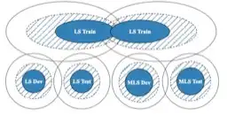
-
MLS: A Large-Scale Multilingual Dataset for Speech Research
Vineel Pratap, Qiantong Xu, Anuroop Sriram, Gabriel Synnaeve, Ronan Collobert
Interspeech 2020
ABSTRACT
This paper introduces Multilingual LibriSpeech (MLS) dataset, a large multilingual corpus suitable for speech research. The dataset is derived from read audiobooks from LibriVox and consists of 8 languages, including about 44.5K hours of English and a total of about 6K hours for other languages. Additionally, we provide Language Models (LM) and baseline Automatic Speech Recognition (ASR) models and for all the languages in our dataset. We believe such a large transcribed dataset will open new avenues in ASR and Text-To-Speech (TTS) research. The dataset will be made freely available for anyone at this http URL.
-

-
Using deep learning to accelerate knee MRI at 3 T: results of an interchangeability study
Michael P Recht, Jure Zbontar, Daniel K Sodickson, Florian Knoll, Nafissa Yakubova, Anuroop Sriram, Tullie Murrell, Aaron Defazio, Michael Rabbat, Leon Rybak et al.
American Journal of Roentgenology (AJR)
ABSTRACT MEDIA
<b>OBJECTIVE</b> <br/>Deep learning (DL) image reconstruction has the potential to disrupt the current state of MRI by significantly decreasing the time required for MRI examinations. Our goal was to use DL to accelerate MRI to allow a 5-minute comprehensive examination of the knee without compromising image quality or diagnostic accuracy.<br/><br/> <b>MATERIALS AND METHODS</b> <br/>A DL model for image reconstruction using a variational network was optimized. The model was trained using dedicated multisequence training, in which a single reconstruction model was trained with data from multiple sequences with different contrast and orientations. After training, data from 108 patients were retrospectively undersampled in a manner that would correspond with a net 3.49-fold acceleration of fully sampled data acquisition and a 1.88-fold acceleration compared with our standard twofold accelerated parallel acquisition. An interchangeability study was performed, in which the ability of six readers to detect internal derangement of the knee was compared for clinical and DL-accelerated images.<br/><br/> <b>RESULTS</b> <br/>We found a high degree of interchangeability between standard and DL-accelerated images. In particular, results showed that interchanging the sequences would produce discordant clinical opinions no more than 4% of the time for any feature evaluated. Moreover, the accelerated sequence was judged by all six readers to have better quality than the clinical sequence.<br/><br/> <b>CONCLUSION</b> <br/>An optimized DL model allowed acceleration of knee images that performed interchangeably with standard images for detection of internal derangement of the knee. Importantly, readers preferred the quality of accelerated images to that of standard clinical images.
- "FastMRI breakthrough shows AI-accelerated MRIs interchangeable with traditional MRIs" by Nafissa Yakubova, Anuroop Sriram, Jure Zbontar, Mike Rabbat, Aaron Defazio, Mark Tygert, Larry Zitnick
- "New Research Finds FastMRI Scans Generated with Artificial Intelligence Are as Accurate as Traditional MRI"
- "Researchers at Facebook AI, NYU Langone Push Speed Limits of MRI"
- "Blind test shows AI-enhanced MRI scans are just as good but 4 times faster" by Devin Coldewey
- "Facebook AI takes MRI images four times faster than normal by 'recreating missing parts' - and experts can't tell the difference" by Ryan Morrison
- 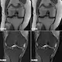
-
Advancing machine learning for MR image reconstruction with an open competition: Overview of the 2019 fastMRI challenge
Florian Knoll, Tullie Murrell, Anuroop Sriram, Nafissa Yakubova, Jure Zbontar, Michael Rabbat, Aaron Defazio, Matthew J Muckley, Daniel K Sodickson, C Lawrence Zitnick et al.
Magnetic Resonance in Medicine (MRM)
ABSTRACT
<b>Purpose:</b><br/>To advance research in the field of machine learning for MR image reconstruction with an open challenge.<br/><br/> <b>Methods:</b><br/>We provided participants with a dataset of raw k-space data from 1,594 consecutive clinical exams of the knee. The goal of the challenge was to reconstruct images from these data. In order to strike a balance between realistic data and a shallow learning curve for those not already familiar with MR image reconstruction, we ran multiple tracks for multi-coil and single-coil data. We performed a two-stage evaluation based on quantitative image metrics followed by evaluation by a panel of radiologists. The challenge ran from June to December of 2019.<br/><br/> <b>Results:</b><br/>We received a total of 33 challenge submissions. All participants chose to submit results from supervised machine learning approaches.<br/><br/> <b>Conclusion:</b><br/>The challenge led to new developments in machine learning for image reconstruction, provided insight into the current state of the art in the field, and highlighted remaining hurdles for clinical adoption.
-
An introduction to electrocatalyst design using machine learning for renewable energy storage
C Lawrence Zitnick, Lowik Chanussot, Abhishek Das, Siddharth Goyal, Javier Heras-Domingo, Caleb Ho, Weihua Hu, Thibaut Lavril, Aini Palizhati, Morgane Riviere et al.
ABSTRACT
Scalable and cost-effective solutions to renewable energy storage are essential to addressing the world's rising energy needs while reducing climate change. As we increase our reliance on renewable energy sources such as wind and solar, which produce intermittent power, storage is needed to transfer power from times of peak generation to peak demand. This may require the storage of power for hours, days, or months. One solution that offers the potential of scaling to nation-sized grids is the conversion of renewable energy to other fuels, such as hydrogen or methane. To be widely adopted, this process requires cost-effective solutions to running electrochemical reactions. An open challenge is finding low-cost electrocatalysts to drive these reactions at high rates. Through the use of quantum mechanical simulations (density functional theory), new catalyst structures can be tested and evaluated. Unfortunately, the high computational cost of these simulations limits the number of structures that may be tested. The use of machine learning may provide a method to efficiently approximate these calculations, leading to new approaches in finding effective electrocatalysts. In this paper, we provide an introduction to the challenges in finding suitable electrocatalysts, how machine learning may be applied to the problem, and the use of the Open Catalyst Project OC20 dataset for model training.
-
End-to-end variational networks for accelerated MRI reconstruction
Anuroop Sriram, Jure Zbontar, Tullie Murrell, Aaron Defazio, C Lawrence Zitnick, Nafissa Yakubova, Florian Knoll, Patricia Johnson
International Conference on Medical Image Computing and Computer-Assisted Intervention (MICCAI) 2020
ABSTRACT
The slow acquisition speed of magnetic resonance imaging (MRI) has led to the development of two complementary methods: acquiring multiple views of the anatomy simultaneously (parallel imaging) and acquiring fewer samples than necessary for traditional signal processing methods (compressed sensing). While the combination of these methods has the potential to allow much faster scan times, reconstruction from such undersampled multi-coil data has remained an open problem. In this paper, we present a new approach to this problem that extends previously proposed variational methods by learning fully end-to-end. Our method obtains new state-of-the-art results on the fastMRI dataset for both brain and knee MRIs.
- 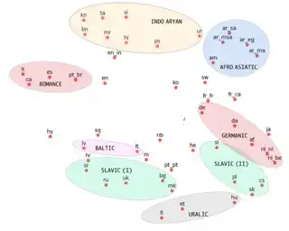
-
Massively Multilingual ASR: 50 Languages, 1 Model, 1 Billion Parameters
Vineel Pratap, Anuroop Sriram, Paden Tomasello, Awni Hannun, Vitaliy Liptchinsky, Gabriel Synnaeve, Ronan Collobert
Interspeech 2020
ABSTRACT MEDIA
We study training a single acoustic model for multiple languages with the aim of improving automatic speech recognition (ASR) performance on low-resource languages, and over-all simplifying deployment of ASR systems that support diverse languages. We perform an extensive benchmark on 51 languages, with varying amount of training data by language(from 100 hours to 1100 hours). We compare three variants of multilingual training from a single joint model without knowing the input language, to using this information, to multiple heads (one per language cluster). We show that multilingual training of ASR models on several languages can improve recognition performance, in particular, on low resource languages. We see 20.9%, 23% and 28.8% average WER relative reduction compared to monolingual baselines on joint model, joint model with language input and multi head model respectively. To our knowledge, this is the first work studying multilingual ASR at massive scale, with more than 50 languages and more than 16,000 hours of audio across them.
- 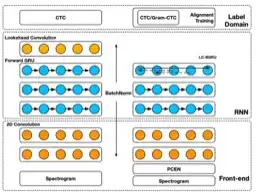
-
Systems and methods for principled bias reduction in production speech models (Patent)
Eric Battenberg, Rewon Child, Adam Coates, Christopher Fougner, Yashesh Gaur, Jiaji Huang, Heewoo Jun, Ajay Kannan, Markus Kliegl, Atul Kumar et al.
US Patent 10,657,955
ABSTRACT
Described herein are systems and methods to identify and address sources of bias in an end-to-end speech model. In one or more embodiments, the end-to-end model may be a recurrent neural network with two 2D-convolutional input layers, followed by multiple bidirectional recurrent layers and one fully connected layer before a softmax layer. In one or more embodiments, the network is trained end-to-end using the CTC loss function to directly predict sequences of characters from log spectrograms of audio. With optimized recurrent layers and training together with alignment information, some unwanted bias induced by using purely forward only recurrences may be removed in a deployed model.
- 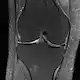
-
fastMRI: A publicly available raw k-space and DICOM dataset of knee images for accelerated MR image reconstruction using machine learning
Florian Knoll, Jure Zbontar, Anuroop Sriram, Matthew J Muckley, Mary Bruno, Aaron Defazio, Marc Parente, Krzysztof J Geras, Joe Katsnelson, Hersh Chandarana et al.
Radiology: Artificial Intelligence
ABSTRACT MEDIA
Accelerating Magnetic Resonance Imaging (MRI) by taking fewer measurements has the potential to reduce medical costs, minimize stress to patients and make MRI possible in applications where it is currently prohibitively slow or expensive. We introduce the fastMRI dataset, a large-scale collection of both raw MR measurements and clinical MR images, that can be used for training and evaluation of machine-learning approaches to MR image reconstruction. By introducing standardized evaluation criteria and a freely-accessible dataset, our goal is to help the community make rapid advances in the state of the art for MR image reconstruction. We also provide a self-contained introduction to MRI for machine learning researchers with no medical imaging background.
- "NYU and Facebook team up to supercharge MRI scans with AI" by Devin Coldewey
- "Facebook and NYU use artificial intelligence to make MRI scans four times faster" by James Vincent
- "Facebook, NYU aim to use AI to speed up MRI scans" by Larry Dignan
- "An exclusive look at Facebook’s efforts to speed up MRI scans using artificial intelligence" by Rob Verger
- "Facebook and NYU want to use AI to make MRI exams faster" by Marrian Zhou
- "Facebook, NYU team up to make MRI scans faster through AI" by Mike Snider
- 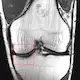
-
GrappaNet: Combining parallel imaging with deep learning for multi-coil MRI reconstruction
Anuroop Sriram, Jure Zbontar, Tullie Murrell, C Lawrence Zitnick, Aaron Defazio, Daniel K Sodickson
Conference on Computer Vision and Pattern Recognition (CVPR) 2019
ABSTRACT
Magnetic Resonance Image (MRI) acquisition is an inherently slow process which has spurred the development of two different acceleration methods: acquiring multiple correlated samples simultaneously (parallel imaging) and acquiring fewer samples than necessary for traditional signal processing methods (compressed sensing). Both methods provide complementary approaches to accelerating the speed of MRI acquisition. In this paper, we present a novel method to integrate traditional parallel imaging methods into deep neural networks that is able to generate high quality reconstructions even for high acceleration factors. The proposed method, called GrappaNet, performs progressive reconstruction by first mapping the reconstruction problem to a simpler one that can be solved by a traditional parallel imaging methods using a neural network, followed by an application of a parallel imaging method, and finally fine-tuning the output with another neural network. The entire network can be trained end-to-end. We present experimental results on the recently released fastMRI dataset and show that GrappaNet can generate higher quality reconstructions than competing methods for both 4× and 8× acceleration.
2019
- 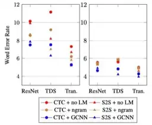
-
End-to-end asr: from supervised to semi-supervised learning with modern architectures
Gabriel Synnaeve, Qiantong Xu, Jacob Kahn, Tatiana Likhomanenko, Edouard Grave, Vineel Pratap, Anuroop Sriram, Vitaliy Liptchinsky, Ronan Collobert
ABSTRACT
We study pseudo-labeling for the semi-supervised training of ResNet, Time-Depth Separable ConvNets, and Transformers for speech recognition, with either CTC or Seq2Seq loss functions. We perform experiments on the standard LibriSpeech dataset, and leverage additional unlabeled data from LibriVox through pseudo-labeling. We show that while Transformer-based acoustic models have superior performance with the supervised dataset alone, semi-supervision improves all models across architectures and loss functions and bridges much of the performance gaps between them. In doing so, we reach a new state-of-the-art for end-to-end acoustic models decoded with an external language model in the standard supervised learning setting, and a new absolute state-of-the-art with semi-supervised training. Finally, we study the effect of leveraging different amounts of unlabeled audio, propose several ways of evaluating the characteristics of unlabeled audio which improve acoustic modeling, and show that acoustic models trained with more audio rely less on external language models.
- 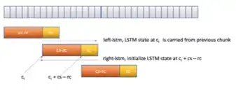
-
RNN-T for latency controlled ASR with improved beam search
Mahaveer Jain, Kjell Schubert, Jay Mahadeokar, Ching-Feng Yeh, Kaustubh Kalgaonkar, Anuroop Sriram, Christian Fuegen, Michael L Seltzer
ABSTRACT
Neural transducer-based systems such as RNN Transducers (RNN-T) for automatic speech recognition (ASR) blend the individual components of a traditional hybrid ASR systems (acoustic model, language model, punctuation model, inverse text normalization) into one single model. This greatly simplifies training and inference and hence makes RNN-T a desirable choice for ASR systems. In this work, we investigate use of RNN-T in applications that require a tune-able latency budget during inference time. We also improved the decoding speed of the originally proposed RNN-T beam search algorithm. We evaluated our proposed system on English videos ASR dataset and show that neural RNN-T models can achieve comparable WER and better computational efficiency compared to a well tuned hybrid ASR baseline.
2018
-
Robust speech recognition using generative adversarial networks
Anuroop Sriram, Heewoo Jun, Yashesh Gaur, Sanjeev Satheesh
IEEE international conference on acoustics, speech and signal processing (ICASSP) 2018
ABSTRACT
This paper describes a general, scalable, end-to-end framework that uses the generative adversarial network (GAN) objective to enable robust speech recognition. Encoders trained with the proposed approach enjoy improved invariance by learning to map noisy audio to the same embedding space as that of clean audio. Unlike previous methods, the new framework does not rely on domain expertise or simplifying assumptions as are often needed in signal processing, and directly encourages robustness in a data-driven way. We show the new approach improves simulated far-field speech recognition of vanilla sequence-to-sequence models without specialized front-ends or preprocessing.
-
Cold Fusion: Training Seq2Seq Models Together with Language Models
Anuroop Sriram, Heewoo Jun, Sanjeev Satheesh, Adam Coates
Interspeech 2018
ABSTRACT
Sequence-to-sequence (Seq2Seq) models with attention have excelled at tasks which involve generating natural language sentences such as machine translation, image captioning and speech recognition. Performance has further been improved by leveraging unlabeled data, often in the form of a language model. In this work, we present the Cold Fusion method, which leverages a pre-trained language model during training, and show its effectiveness on the speech recognition task. We show that Seq2Seq models with Cold Fusion are able to better utilize language information enjoying i) faster convergence and better generalization, and ii) almost complete transfer to a new domain while using less than 10% of the labeled training data.
2017
- 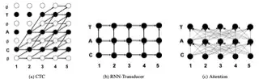
-
Exploring neural transducers for end-to-end speech recognition
Eric Battenberg, Jitong Chen, Rewon Child, Adam Coates, Yashesh Gaur Yi Li, Hairong Liu, Sanjeev Satheesh, Anuroop Sriram, Zhenyao Zhu
Automatic Speech Recognition and Understanding (ASRU) 2017
ABSTRACT
In this work, we perform an empirical comparison among the CTC, RNN-Transducer, and attention-based Seq2Seq models for end-to-end speech recognition. We show that, without any language model, Seq2Seq and RNN-Transducer models both outperform the best reported CTC models with a language model, on the popular Hub5'00 benchmark. On our internal diverse dataset, these trends continue - RNNTransducer models rescored with a language model after beam search outperform our best CTC models. These results simplify the speech recognition pipeline so that decoding can now be expressed purely as neural network operations. We also study how the choice of encoder architecture affects the performance of the three models - when all encoder layers are forward only, and when encoders downsample the input representation aggressively.
-
Reducing bias in production speech models
Eric Battenberg, Rewon Child, Adam Coates, Christopher Fougner, Yashesh Gaur, Jiaji Huang, Heewoo Jun, Ajay Kannan, Markus Kliegl, Atul Kumar et al.
ABSTRACT
Replacing hand-engineered pipelines with end-to-end deep learning systems has enabled strong results in applications like speech and object recognition. However, the causality and latency constraints of production systems put end-to-end speech models back into the underfitting regime and expose biases in the model that we show cannot be overcome by scaling up, i.e., training bigger models on more data. In this work we systematically identify and address sources of bias, reducing error rates by up to 20% while remaining practical for deployment. We achieve this by utilizing improved neural architectures for streaming inference, solving optimization issues, and employing strategies that increase audio and label modelling versatility.
2016
- 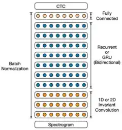
-
Deep speech 2: End-to-end speech recognition in english and mandarin
Dario Amodei, Sundaram Ananthanarayanan, Rishita Anubhai, Jingliang Bai, Eric Battenberg, Carl Case, Jared Casper, Bryan Catanzaro, Qiang Cheng, Guoliang Chen et al.
International conference on machine learning (ICML) 2016
ABSTRACT MEDIA
We show that an end-to-end deep learning approach can be used to recognize either English or Mandarin Chinese speech--two vastly different languages. Because it replaces entire pipelines of hand-engineered components with neural networks, end-to-end learning allows us to handle a diverse variety of speech including noisy environments, accents and different languages. Key to our approach is our application of HPC techniques, resulting in a 7x speedup over our previous system. Because of this efficiency, experiments that previously took weeks now run in days. This enables us to iterate more quickly to identify superior architectures and algorithms. As a result, in several cases, our system is competitive with the transcription of human workers when benchmarked on standard datasets. Finally, using a technique called Batch Dispatch with GPUs in the data center, we show that our system can be inexpensively deployed in an online setting, delivering low latency when serving users at scale.
2013
- 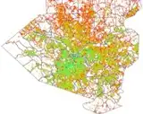
-
FRED (A Framework for Reconstructing Epidemic Dynamics): an open-source software system for modeling infectious diseases and control strategies using census-based populations
John J Grefenstette, Shawn T Brown, Roni Rosenfeld, Jay DePasse, Nathan TB Stone, Phillip C Cooley, William D Wheaton, Alona Fyshe, David D Galloway, Anuroop Sriram et al.
BMC public health
ABSTRACT
Background<br/><br/> Mathematical and computational models provide valuable tools that help public health planners to evaluate competing health interventions, especially for novel circumstances that cannot be examined through observational or controlled studies, such as pandemic influenza. The spread of diseases like influenza depends on the mixing patterns within the population, and these mixing patterns depend in part on local factors including the spatial distribution and age structure of the population, the distribution of size and composition of households, employment status and commuting patterns of adults, and the size and age structure of schools. Finally, public health planners must take into account the health behavior patterns of the population, patterns that often vary according to socioeconomic factors such as race, household income, and education levels.<br/><br/> Results<br/> FRED (a Framework for Reconstructing Epidemic Dynamics) is a freely available open-source agent-based modeling system based closely on models used in previously published studies of pandemic influenza. This version of FRED uses open-access census-based synthetic populations that capture the demographic and geographic heterogeneities of the population, including realistic household, school, and workplace social networks. FRED epidemic models are currently available for every state and county in the United States, and for selected international locations.<br/><br/> Conclusions<br/> State and county public health planners can use FRED to explore the effects of possible influenza epidemics in specific geographic regions of interest and to help evaluate the effect of interventions such as vaccination programs and school closure policies. FRED is available under a free open source license in order to contribute to the development of better modeling tools and to encourage open discussion of modeling tools being used to evaluate public health policies. We also welcome participation by other researchers in the further development of FRED.
2009
- 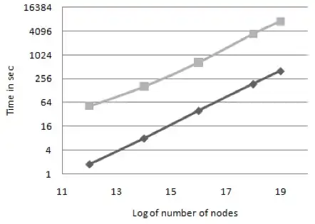
-
Evaluating centrality metrics in real-world networks on GPU
Anuroop Sriram, Kollu Gautham, Kishore Kothapalli, P J Narayan, R Govindarajulu
IEEE International Conference on High Performance Computing (HiPC 2009)
ABSTRACT
GPGPU has received a lot of attention recently as a cost effective solution for high performance computing. In this paper we present a parallel algorithm for computing Betweenness centrality (BC) using CUDA. BC is an important metric in small world network analysis which is expensive to compute. While there are existing parallel implementations, ours is the first implementation on commodity hardware. Our algorithm exploits parallelism at multiple levels of granularity to achieve good performance. We conduct several experiments to show that the algorithm gives considerable speedup over sequential algorithms. We also provide a detailed analysis of the performance of the algorithm.